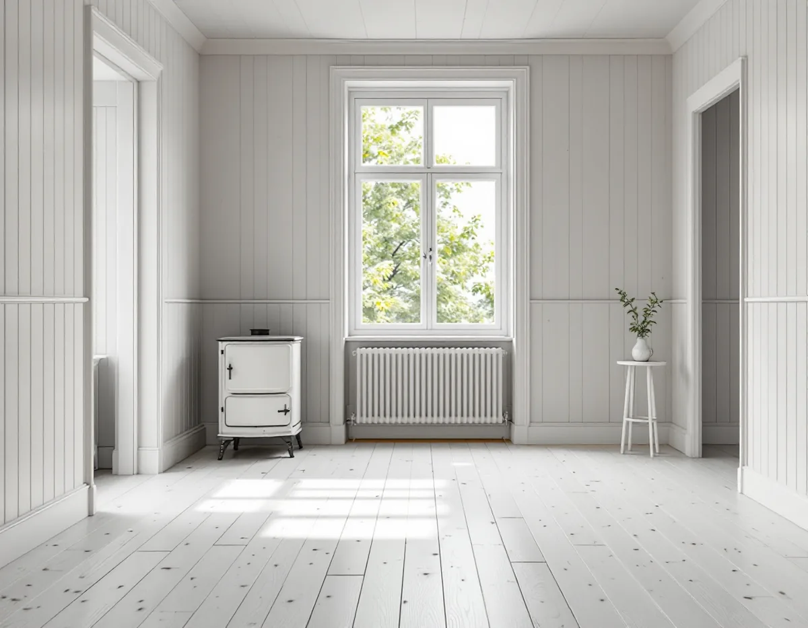
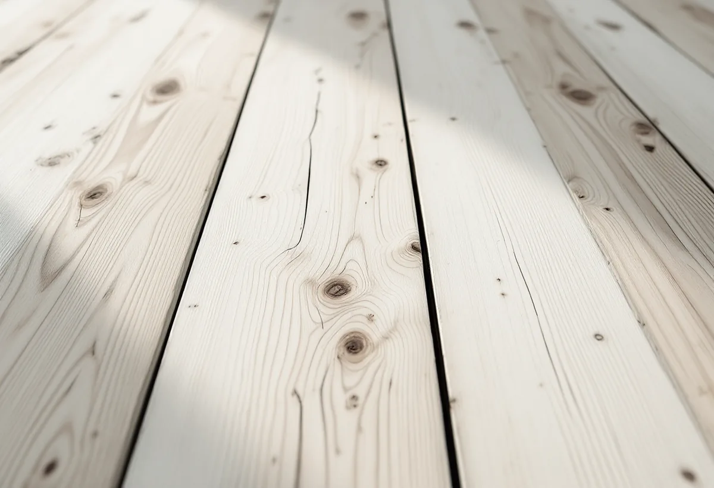

Platsbesök
Vi kontrollerar träslag, springor och tidigare behandling och bestämmer var ett prov ska göras.
Ett golv av fur eller gran behöver inte lackas. Lut, såpa och olja är äldre behandlingar som ger träet en annan ton och går att bättra på i ett gångstråk utan att hela rummet slipas om. Geal Entreprenad AB slipar och behandlar trägolv i Gamla Enskede, Enskededalen, Enskedefältet och Enskede gård, med gratis platsbesök, skriftligt kostnadsförslag och ROT-avdraget direkt på fakturan.

Stockholms stad köpte Enskede gård och drygt 600 hektar mark 1904. Enligt Stadsmuseets Stockholms Spår växte sedan den ena trädgårdsstaden efter den andra upp: Gamla Enskede, den första i sitt slag i landet, Enskededalen och Enskedefältet med sina småstugor. Enskededalens villor tillkom 1917–25 med den svenska småstaden som förebild, och merparten av villorna i Enskede gård byggdes under 1920- och 30-talen.
Stadens områdesfakta för 2025 visar att husen fortfarande dominerar på flera håll. Gamla Enskede har 923 bostäder i småhus, Enskededalen 544, Enskede gård 430 och Enskedefältet 406, där nästan alla är äganderätter. Vilket trä golven i ditt hus är gjorda av ser vi först på plats, men står det fur eller gran under en gammal lack finns fler val än att lacka om.

Golvbranschens riktlinjer för lutbehandling, LUT 22, beskriver traditionell lutning av homogena golv av fur och gran, och med extra försiktighet även lamellgolv. Lut består av natrium- och kaliumhydroxid i vattenlösning och är starkt frätande. Ett lutat golv tar emot pigment djupare och jämnare, och i kombination med vit olja bevaras träets ljushet. Lövträ kräver andra produkter och ingår inte i riktlinjerna.
Eftersom luten fräter är skyddstäckningen viktig. Riktlinjerna varnar särskilt för skador på målade ytor, metall och lövträ, och den som lutar ska ha gummihandskar och skyddsglasögon. I ett hus med målade socklar, dörrfoder och trappor tejpar och täcker vi därför allt som gränsar mot golvet innan vi börjar. Ska snickerier lagas samtidigt, se snickare i Enskede.
Golvet slipas först, så att den gamla ytbehandlingen är borta. Enligt LUT 22 arbetar man sedan i hela planklängder: man börjar längst in i ett hörn, lägger lut på ett par plankors bredd och arbetar sig bort till det andra hörnet, vänder och fortsätter tills man backar ut ur rummet. Luten ska läggas vått i vått för att undvika skarvar. Den ska röras om under arbetet, eftersom kalk och pigment annars sjunker till botten av kärlet.
Efter ett dygn jämnas överskottet av kalk och pigment ut med ett skurblock eller en skurmaskin med röd rondell, och golvet dammsugs noga. Golvets fuktkvot bör då inte vara högre än tolv procent innan slutbehandlingen läggs på. Riktlinjerna rekommenderar inte lack ovanpå lut. Ett mindre prov på golvet visar vilken slutbehandling som ger det utseende du vill ha.
Såpa är den traditionella slutbehandlingen och finns ofärgad eller med vitt pigment. Det krävs i regel tre till fyra omgångar innan golvet är mättat. Golvolja ger en sidenmatt yta, och en ofärgad olja kan ge träet en bärnstensfärgad ton som ljusnar något med tiden. Hårdvaxolja finns i flera glansgrader. Ett oljat golv har fördelen att det går att punktbättra, så att bara ett slitet gångstråk behöver underhållas.
I ett äldre hus med springor mellan brädorna finns en risk som Golvbranschens riktlinjer för oljebehandling pekar ut: oljan kan rinna ned genom springor och kvisthål i bjälklagets fyllning. Trasor som har använts till olja ska ligga i vatten i minst ett dygn eller brännas direkt, eftersom de kan självantända. Till det dagliga underhållet anger riktlinjerna en återfettande golvsåpa med en fetthalt på 20–30 procent, som inte ska förväxlas med vanlig gul- eller grönsåpa.
Ett lutat och såpat golv passar i torra rum. I köket kan en hårdare behandling vara klokare, och i badrummet är det tätskiktet under klinkern som gäller. Ska köket byggas om i samma veva finns mer under köksrenovering i Enskede, och om våtrummet under badrumsrenovering i Enskede. Allmänt om golvtyper och ytbehandlingar finns på sidan om golvläggning.
Vi kontrollerar träslag, springor och tidigare behandling och bestämmer var ett prov ska göras.
Slipning, lutning och slutbehandling redovisas som egna poster.
Socklar, foder, trappor och metall täcks innan luten tas fram.
Golvet slipas till rent trä och lutas i hela planklängder.
Såpa, olja eller hårdvaxolja läggs på i flera omgångar.
Du får råd om rätt såpa och om hur gångstråken underhålls.
Skatteverket godkänner rotavdrag för att slipa och byta golv i ett småhus du äger. Avdraget är 30 procent av arbetskostnaden, högst 50 000 kr per person och år, och tillsammans med rutavdrag högst 75 000 kr.
Lut, såpa, olja och resekostnader ger inget avdrag. Geal drar avdraget direkt på fakturan.
Golvytan, hur mycket gammal lack som ska slipas bort och vilken slutbehandling du väljer avgör mest. Såpa kräver fler omgångar än olja. Efter ett gratis platsbesök får du ett skriftligt kostnadsförslag.
Parkett, trägolv, klinker och slipning.
Golvläggning i Stockholm →Takbyte, takbesiktning och plåtarbeten.
Takläggare i Enskede →Trädgårdsstad med lertegel.
Takrenovering i Enskede →Trädgårdsstaden, kartan och lovet.
Attefallshus i Enskede →Typhus i trä, träbjälklag och bostadsrätt.
Badrumsrenovering i Enskede →Byggplatsen, gatan och träden.
Byggföretag i Enskede →Trädgårdsstadens kulörer.
Fasadmålning i Enskede →Trähus, putsade typhus och småstugor i Enskede.
Fasadrenovering i Enskede →Fönster i riksintresset.
Fönsterbyte i Enskede →Trädgårdsstadens fönster.
Fönsterrenovering i Enskede →Slipa fram gamla brädgolv i villan.
Golvslipning i Enskede →Typhus, dubbelhus och småstugor.
Köksrenovering i Enskede →Trädgårdsstad, egnahem och småstugor i Enskede.
Målare i Enskede →Snörasskydd, rännor och verandaplåt i Enskede.
Plåtslagare i Enskede →Verandor, entréer och bodar i trädgårdsstaden.
Snickare i Enskede →Takfallet, höjden och riksintresset.
Takbyte i Enskede →Tapet i vindsrum och snedtak.
Tapetsering i Enskede →Små tomter och riksintresse.
Tillbyggnad i Enskede →Renovera innan ni flyttar in.
Totalrenovering i Enskede →